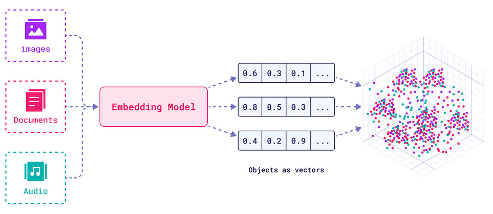
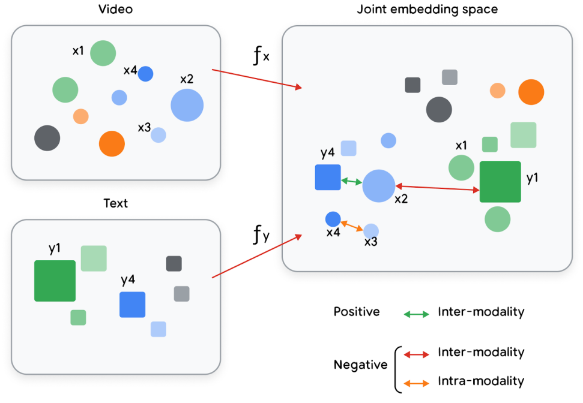
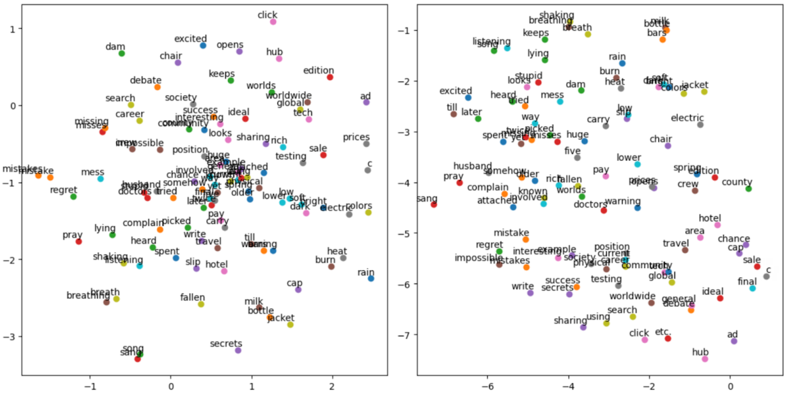

Day 2: Embeddings
Module Overview
Session: Embeddings
Session: Embeddings
What You’ll Learn Today
By the end of this session, you will:
- Understand embeddings as numerical representations of data
- Know how to evaluate embedding quality
- Recognize different types of embeddings and their use cases
What Are Embeddings?
Numerical representations of real-world data
Embeddings as vectors in a low-dimensional space representing text, images, and other data types
Why Embeddings Matter
Compact, meaningful representations
- Lossy compression: Reduce dimensionality while preserving semantics
- Similarity comparison: Measure relationships numerically
- Multimodal alignment: Map different data types to the same space
- Efficient computation: Enable fast search and retrieval
Embeddings in Retrieval Systems
The three-step process
- Precompute embeddings for billions of items
- Map query embeddings into the same space
- Retrieve nearest neighbors efficiently
Joint Embeddings for Multimodality
Multiple data types in one space
Objects of different types (text, images, videos) projected into a joint vector space with semantic meaning
Task-Specific Embeddings
2D visualization of pre-trained GloVe and Word2Vec word embeddings
Different embeddings for different tasks
- Same object → different embeddings
- Optimized for the task at hand
- Semantic meaning preserved for specific use cases
Evaluating Embedding Quality
Why Evaluation Matters
Bad embeddings → bad results
- Embeddings are not automatically good
- Quality depends on model, data, and task
- Evaluation tells you if embeddings work for your use case
Evaluation Methods
- Intrinsic evaluation: Direct measurement of embedding properties
- Extrinsic evaluation: Performance on downstream tasks (IR, classification, ..etc.)
- Benchmarks: MTEB, BEIR for standardized comparison
Search Example: The Challenge
Finding relevant documents
- Query: “How do I reset my password?”
- Corpus: Millions of support articles
- Goal: Find the most relevant articles
Types of Embeddings
Text Embeddings Overview
From words to documents
- Word embeddings: Individual words → vectors
- Document embeddings: Entire documents → vectors
- Context-aware: Meaning depends on surrounding text
Word Embeddings
Individual words as vectors
- Word2Vec: Predicts words from context
- GloVe: Global word-word co-occurrence statistics
- FastText: Handles out-of-vocabulary words

Word embeddings showing similar words clustered together in vector space
Document Embeddings: Shallow Models
Bag-of-words approaches
- TF-IDF: Term frequency × inverse document frequency
- BM25: Probabilistic ranking function
- Limitations: No word order, no context
Document Embeddings: Deep Models
Context-aware neural embeddings
- BERT: Bidirectional encoder representations
- Sentence-BERT: Efficient sentence embeddings
- Modern LLMs: GPT, T5, Gemini embeddings

Single-vector vs. Multi-vector encoders
Image & Multimodal Embeddings
Visual understanding in vector space
- CNN-based: Convolutional neural networks for images
- Vision transformers: ViT, CLIP for joint text-image space
- Multimodal: Same space for text, images, videos
Images and text projected into a joint embedding matrix (OpenAI’s CLIP model)
Structured Data Embeddings
Tables, graphs, and relational data
- General structured data: Feature engineering + ML
- User-item data: Collaborative filtering embeddings
- Graph embeddings: Node and edge representations
Training Embeddings
Training Approaches
How embeddings are learned
- Supervised: Task-specific labels guide learning
- Self-supervised: Learn from data structure itself
- Transfer learning: Pre-trained models fine-tuned
Pre-trained vs. Custom Embeddings
When to train your own
- Pre-trained: Use when available, often better
- Custom: Needed for domain-specific tasks
- Fine-tuning: Best of both worlds